自注意力机制¶
一. 引入¶
到目前为止，classification和regression任务的输入都还只是一个向量。但是当输入是一堆向量(sequence)呢？
输入是a set of vector(sequence)的例子
-
输入是一段文字，其中的每一个词都是一个vector，例如：
> I saw a cat将词汇转化为向量的方法: (1) one-hot (2) Word Embedding
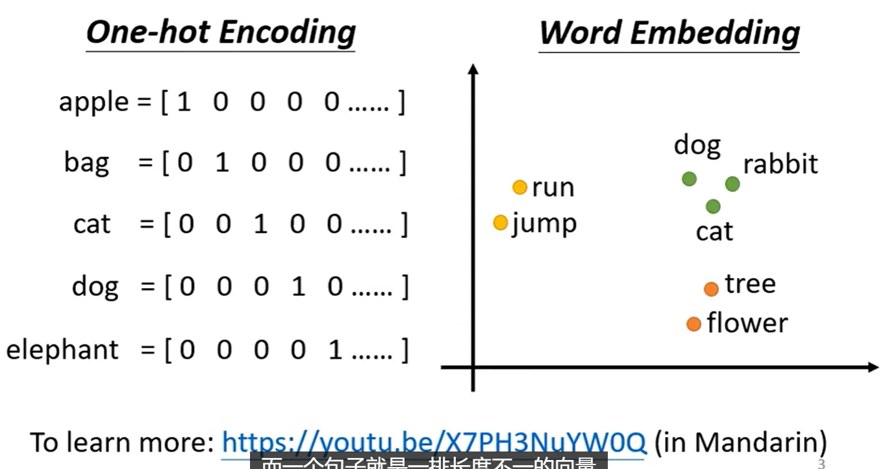
-
输入是一段声音讯号
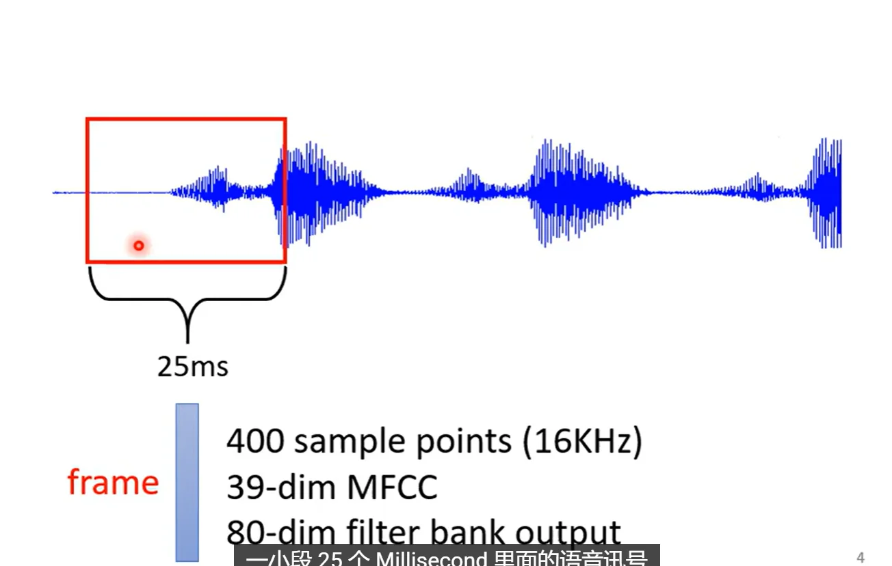
有很多方法将一个window中的讯号转化为一个vector -
Graph
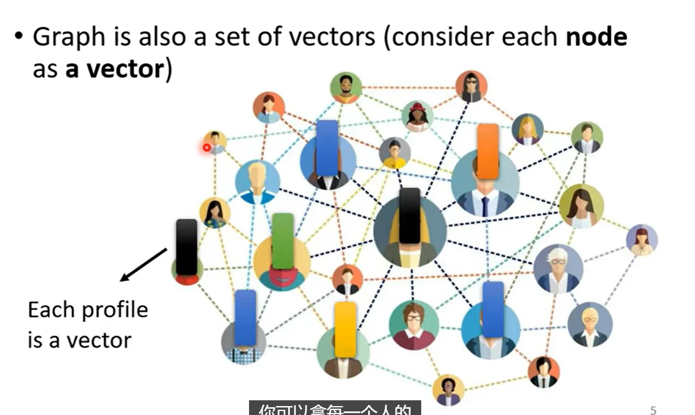
每个结点就是一个向量
二. 输入是sequence时，输出是什么呢？¶
-
Each vector has a label
输入的每一个向量，对应一个label
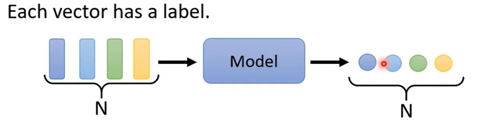
例如我们输入一个句子，机器识别句子中的每一个词的词性 -
A whole sequence has a label
输入的一整个向量序列，对应一个label
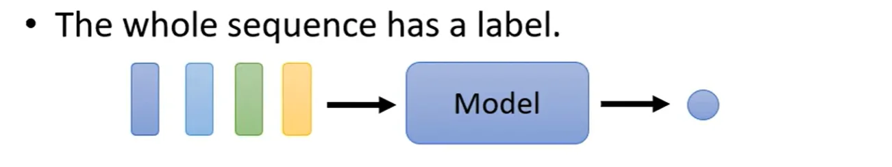
例如输入一个句子，机器判断positive or negative
输入一个分子，判断有没有毒性？亲水性如何？ -
sequence to sequence
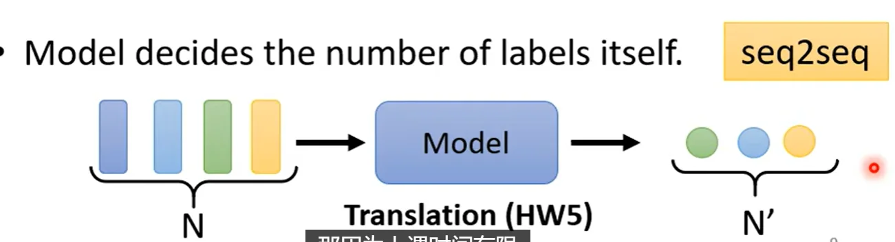
输入的labels个数不确定，机器要自己判断应该输出多少个label
例如：翻译（输入输出是不同的语言，输入输出的词汇不一样），同理，语音辨识
三. Sequence Labeling(第一种情况)¶
一个有瑕疵的做法——直接用一个FC
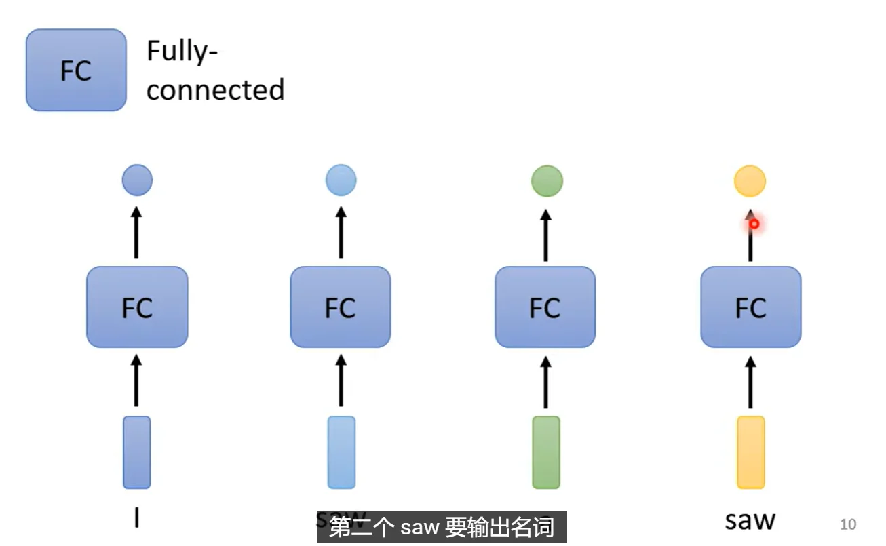
问题，所有相同的输入产生相同的输出，但是在序列中时，他们不一定对应着同一个label!
解决办法： 把前后几个vector串起来，一起丢进FC
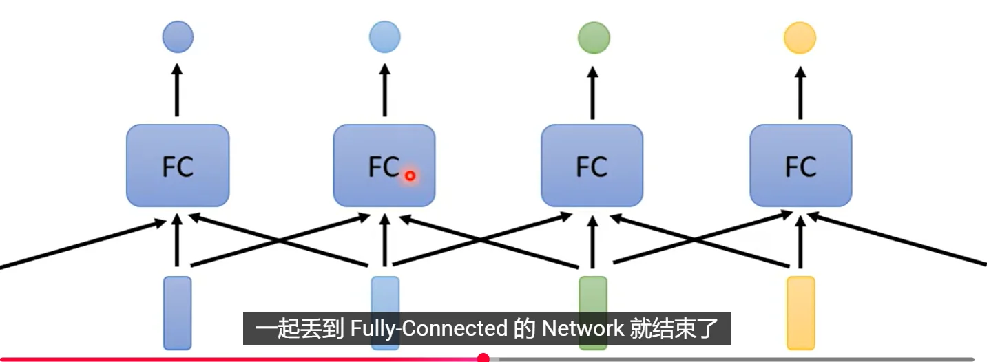
如果我们需要考虑一整个sequence作为一个window进入FC呢？开一个巨大的window意味着FC的参数量很大，同时容易Overfitting
重要引入：Self Attention
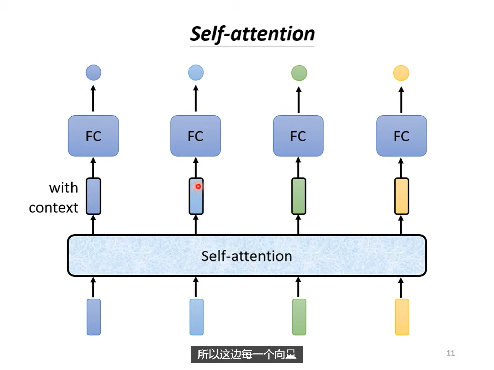
即引入一个self-attention层，并且，我们可以像CNN中堆叠卷积层一样堆叠多个self-attention层：
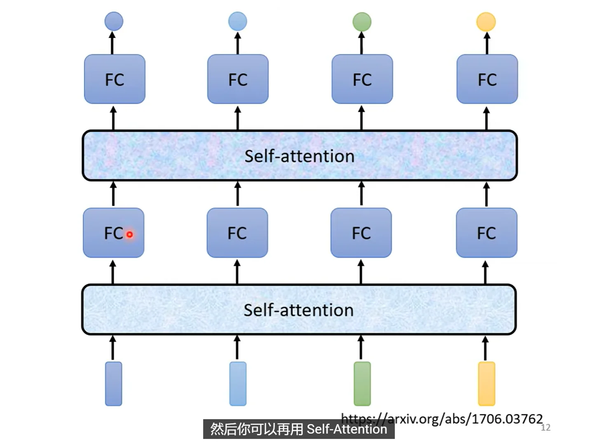
3.1 self-attention层的工作机制¶
例如self-attention层input \(\mathbf{a_1},\mathbf{a_2},\mathbf{a_3},\mathbf{a_4}\) 四个向量，output \(\mathbf{b_1},\mathbf{b_2},\mathbf{b_3},\mathbf{b_4}\) 四个向量。每一个\(\mathbf{b}\)都需要考虑所有输入序列的向量
举个例子，我们来看看如何产生\(\mathbf{b_1}\)这个向量:
1. 找出\(\mathbf{a_1},\mathbf{a_2},\mathbf{a_3},\mathbf{a_4}\)中跟\(\mathbf{a_1}\)的相关性(relevant)程度
-
如何描述这种相关性程度呢？——利用一个数值 \(\alpha\) 描述。
常见方法——dot product(内积)和additive(加性)
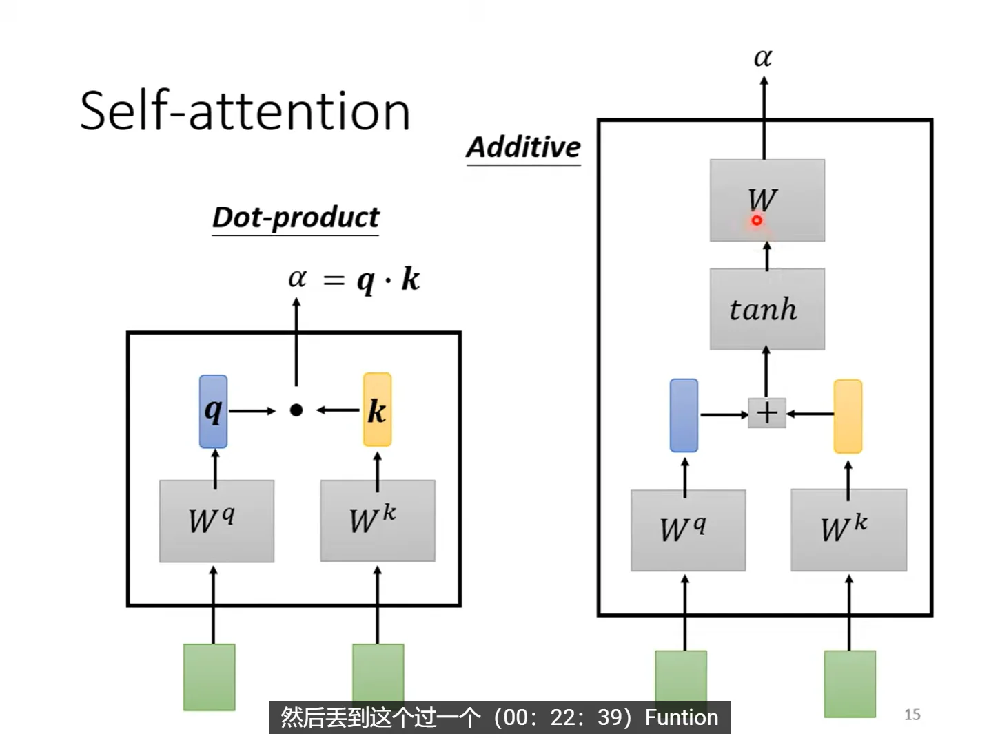
这张图展示了自注意力（Self-attention）中两种计算注意力得分\(\alpha\)的方式：点积（Dot-product）和加性（Additive）。- 点积注意力（Dot-product Attention）
计算逻辑：- 输入向量分别通过权重矩阵\(\mathbf{W}^q\)、\(\mathbf{W}^k\)得到 查询(query) 向量 \(\mathbf{q}\)、键(key) 向量\(\mathbf{k}\)；
- 注意力得分\(\alpha\)由\(\mathbf{q}\)和\(\mathbf{k}\)的点积直接计算：\(\alpha = \mathbf{q} \cdot \mathbf{k}\)
- 加性注意力（Additive Attention）
计算逻辑：- 输入向量同样通过\(\mathbf{W}^q\)、\(\mathbf{W}^k\)得到\(\mathbf{q}\)、\(\mathbf{k}\)；
- 先将\(\mathbf{q}\)和\(\mathbf{k}\)相加，经过\(\text{tanh}\)激活函数；
- 再通过 权重矩阵 \(\mathbf{W}\)变换得到注意力得分\(\alpha\)（过程可表示为）：\(\alpha = \mathbf{W} \cdot \text{tanh}(\mathbf{q} + \mathbf{k})\)
- 点积注意力（Dot-product Attention）
-
计算出\(\mathbf{a_1}\)跟其他每一个向量\(\mathbf{a_i}\)的 相关性分数 \(\alpha_{1,i}\)(包括自己也要计算)
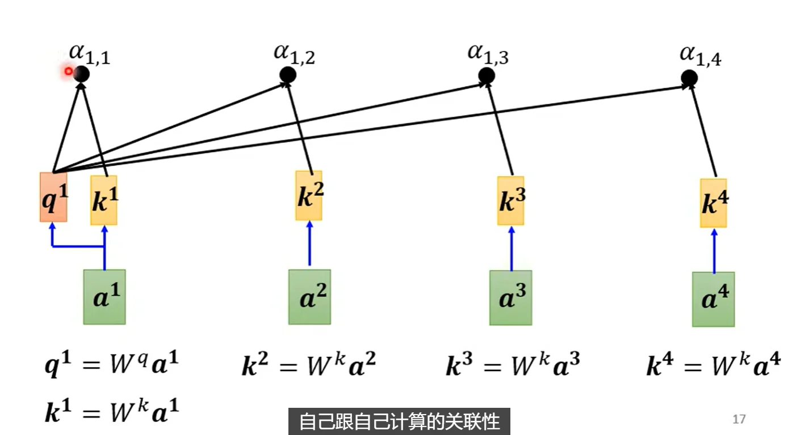
-
Softmax 归一化
将所有源位置的得分归一化为概率分布，得到注意力权重：\[\alpha'_{i,j} = \frac{\exp(\alpha_{i,j})}{\sum_{k} \exp(\alpha_{i,k})}\]此步骤确保 \(\sum_j \alpha'_{i,j} = 1\)，权重具有可解释性（概率意义）。
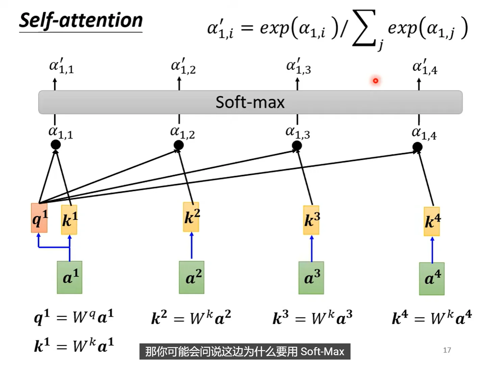
-
加权求和：生成输出
最终，位置 \(i\) 的输出 \(\mathbf{b}^i\) 由所有位置的值向量 \(\mathbf{v}^j\)（通常 \(\mathbf{v}^j = W^v \mathbf{a}^j\)）按权重加权求和得到：\[\mathbf{b}^i = \sum_j \alpha^{\prime}_{i,j} \mathbf{v}^j\]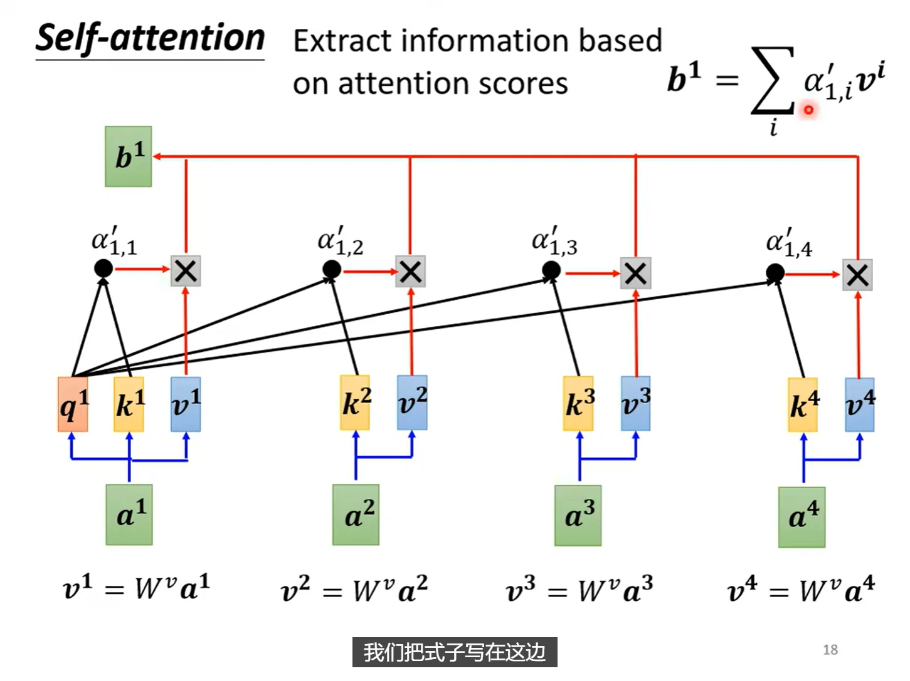
这样做得到的效果就是，哪一个向量与\(\mathbf{a_1}\)的相关性越高，其得分\(\alpha_{1,i}\)就越大，其位置的值向量\(\mathbf{v_i}\)就会占主导地位。
核心思想：
让序列中的每个元素（如词向量）能够“关注”序列中所有其他元素，动态计算它们之间的相关性权重，从而生成富含上下文信息的新表示。
3.2 我们用矩阵来表示这种逻辑过程¶
如下的向量默认是列向量
第一步：得到\(q_i\), \(k_i\), \(v_i\)
第二部：计算attention分数
此时\(k\)是行向量
因此：
同理可得：
等
因此最终：
第三步：Softmax归一化
按column做Softmax
这里的\(A'\)，就称为：attention matrix
第四步：加权求和，得到输出
流程图一览：
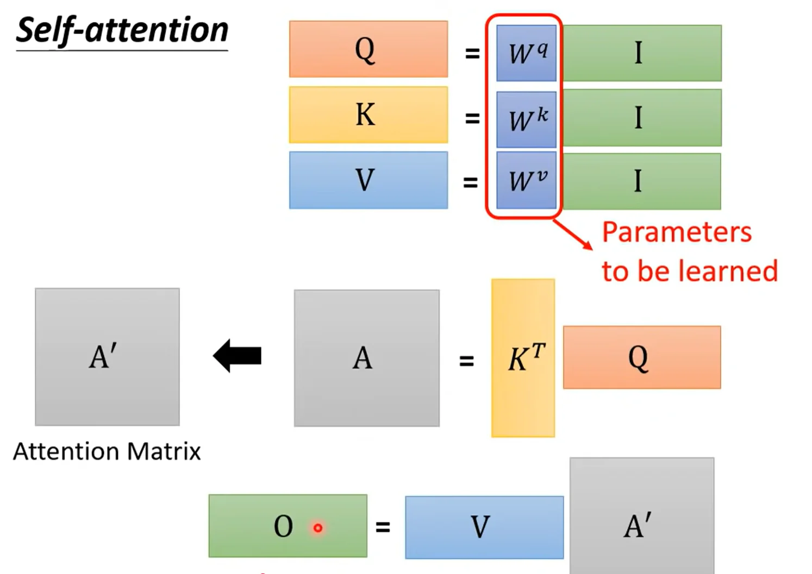
3.3 Multi-Head Attention¶
我们可以并行多个self-attention机制，称为multi-head attention。我们用Head=2举例。
此时：
\(a^1\)乘上一个矩阵得到\(q^1\)
\(q^1\)再乘上另外两个矩阵，得到\(q^{1,1}\)和\(q^{1,2}\)
同理，\(k^1\)和\(v^1\)也会分别得到\(k^{1,1}\)、\(k^{1,2}\)和\(v^{1,1}\)、\(v^{1,2}\)。
然后，一组和二组就分别由自己的\(\mathbf{Q}\), \(\mathbf{K}\), \(\mathbf{V}\), \(\mathbf{A}\)，\(\mathbf{O}\)，计算出自己的输出\(\mathbf{O}\)：\(\mathbf{O^1}\)和\(\mathbf{O^2}\)。
然后，将\(\mathbf{O^1}\)和\(\mathbf{O^2}\)拼接起来，乘上一个矩阵，得到最终的输出\(\mathbf{O}\)。
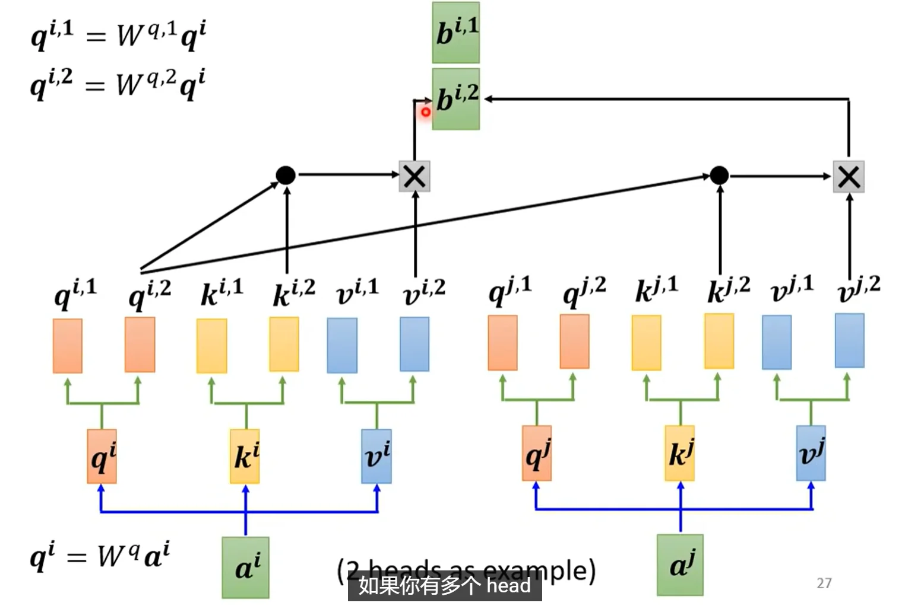
3.4 Position Encoding¶
Self-attention机制本身没有考虑序列中各个向量的顺序信息，因此我们需要引入位置编码(Position Encoding)，将位置信息注入到输入向量中。
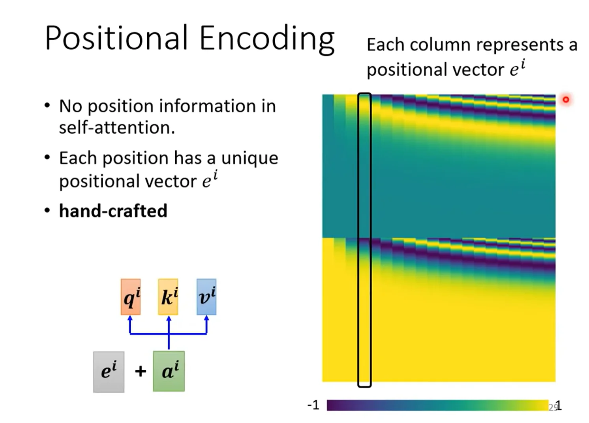
四. Self-Attention for image¶
4.1¶
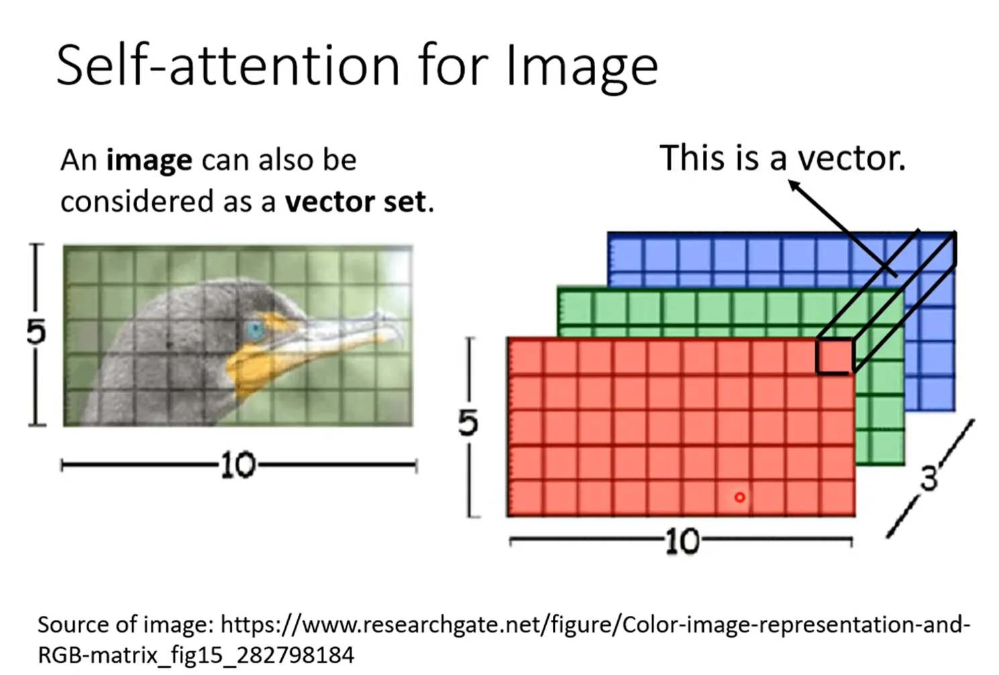
4.2 Self-Attention and CNN¶
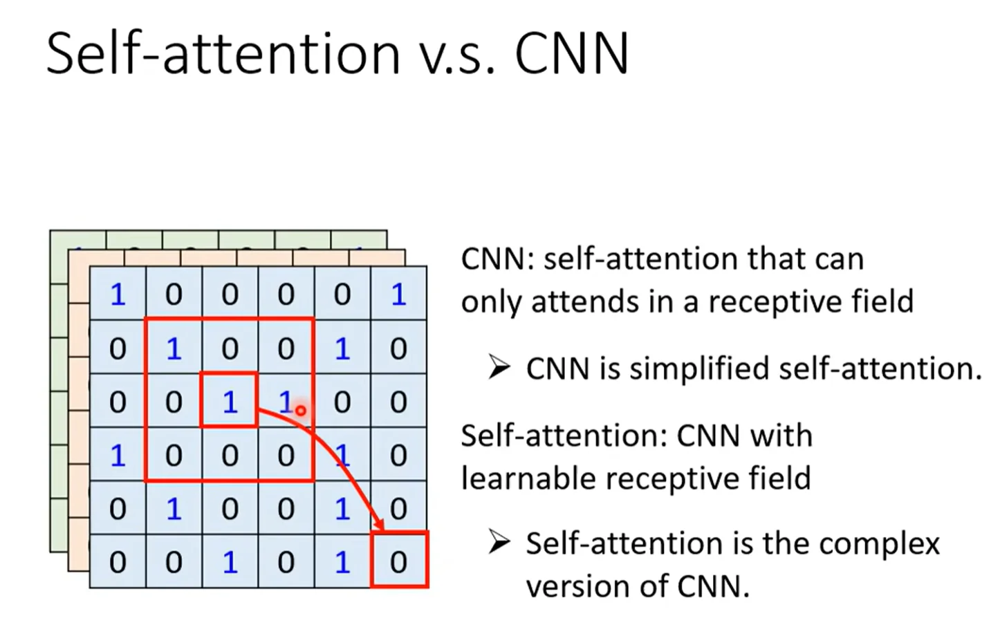
“CNN 是简化版的 Self-attention, Self-attention 是复杂化的 CNN”
CNN 中的 receptive field 的范围和大小是人为划定的，但是在 self-attention 中，vector 之间的关系是学习出来的。
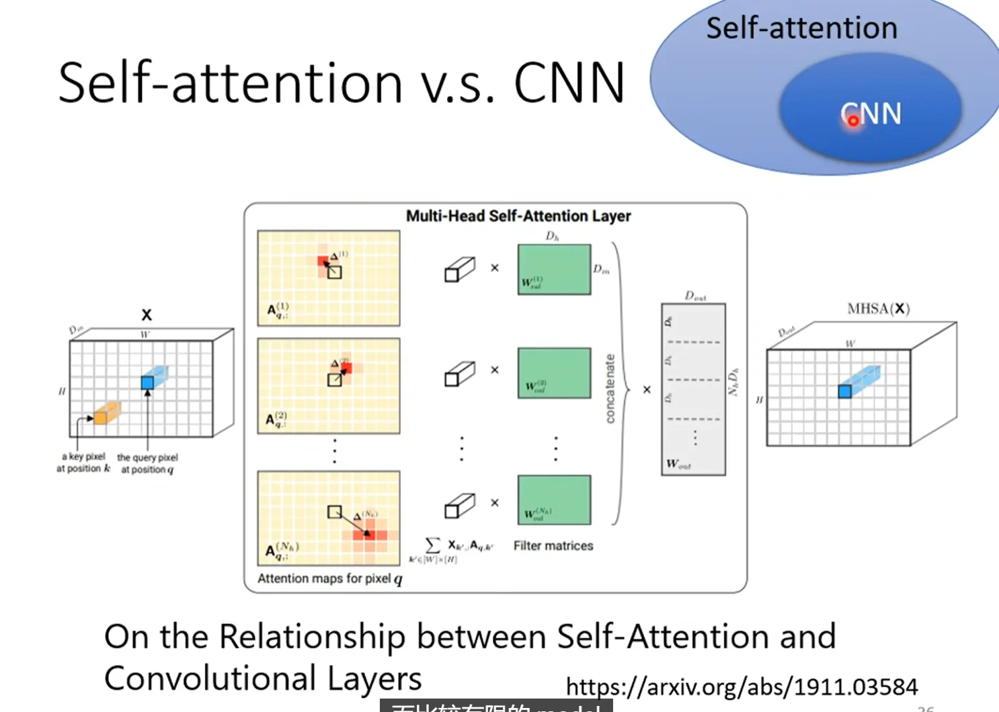
五. Self-attention 与 RNN¶
RNN的考虑是单向的，没有self-attention全面
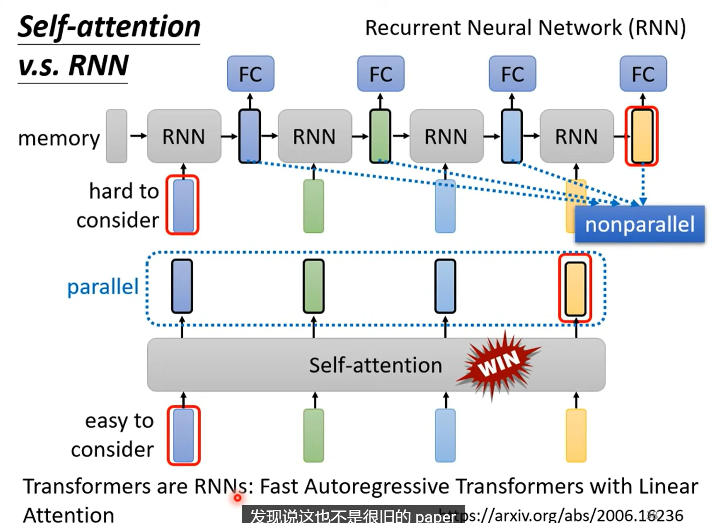